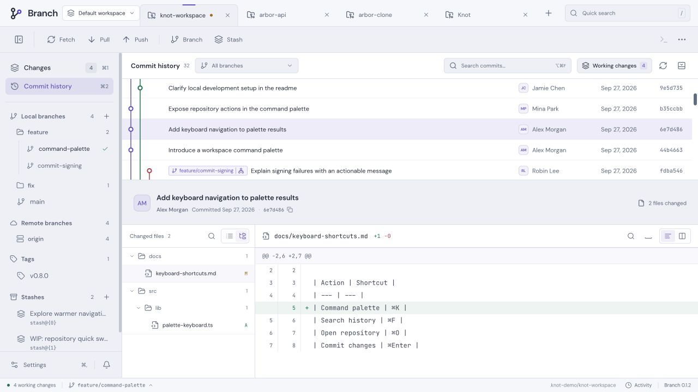

01
흩어진 저장소를 한곳에.
워크스페이스와 그룹으로 프로젝트를 정리하고, 탭이나 사이드바에서 저장소를 전환하세요.
GIT, TIED TOGETHER.
당신의 프로젝트가 모이는
데스크톱 Git 클라이언트.
YOUR WORKSPACE.
저장소를 정리하고, 변경을 비교하고,
커밋까지 자연스럽게 이어가세요.
Desktop app · 공개 출시 준비 중

하나로 이어지는 작업 흐름
열어야 할 저장소부터 확인해야 할 변경까지.
매일 하는 Git 작업을 한곳에서 이어가세요.
워크스페이스와 그룹으로 프로젝트를 정리하고, 탭이나 사이드바에서 저장소를 전환하세요.
파일의 Diff를 비교하고 필요한 변경을 스테이징하세요. 내용을 확인하며 커밋을 준비할 수 있어요.
브랜치와 커밋을 그래프로 살펴보고, 검색과 파일별 히스토리로 변경의 흐름을 확인하세요.
익숙한 Git, 더 편한 작업 공간
내 컴퓨터의 Git과 기존 설정을 사용해요.
매일 쓰는 도구를 자연스럽게 이어가세요.
Fetch, Pull, Push로 원격 저장소와 작업을 이어가세요.
명령 팔레트와 검색, 원하는 키 설정으로 도구를 빠르게 사용하세요.
한국어·영어, 라이트·다크 테마와 포인트 색상을 선택할 수 있어요.
BRANCH FOR DESKTOP
Branch 데스크톱 앱의 공개 출시를 준비하고 있어요.
공개되면 이곳에서 앱을 내려받을 수 있어요.
출시 일정과 다운로드는 추후 안내합니다.
Branch는 내 컴퓨터의 저장소를 다루는 데스크톱 Git 클라이언트예요. 이 페이지는 제품 소개와 출시 안내를 제공합니다.
Branch는 컴퓨터에 설치된 Git을 사용해요. 기존 SSH 키와 Git 인증 설정, 커밋 훅과 서명 설정을 활용할 수 있어요.
현재는 공개 출시를 준비하고 있어요. 설치 파일과 지원 운영체제는 공개 배포 시 이 페이지에서 안내할 예정입니다.